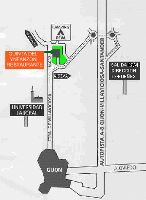

El acceso a la Quinta se realiza por la carretera de Deva nº 69. Desde la N-632 y desde Gijón, se pasa la Universidad Laboral y un kilómetro más arriba se llega al cruce de Deva, se coge y cincuenta metros más allá, a la izquierda se verá la entrada.

Desde la autopista, viniendo de Gijón, Oviedo etc. se pasa un falso túnel, y a unos 1000m llega la salida nº 382 dirección Deva, Cabueñes, Hospital. se coge la dirección Cabueñes - Hospital según marca el plano. Sólo hay dos opciones asfaltadas, la primera a la derecha es el Camping de Deva, la segunda, también a la derecha ya es la "Quinta".